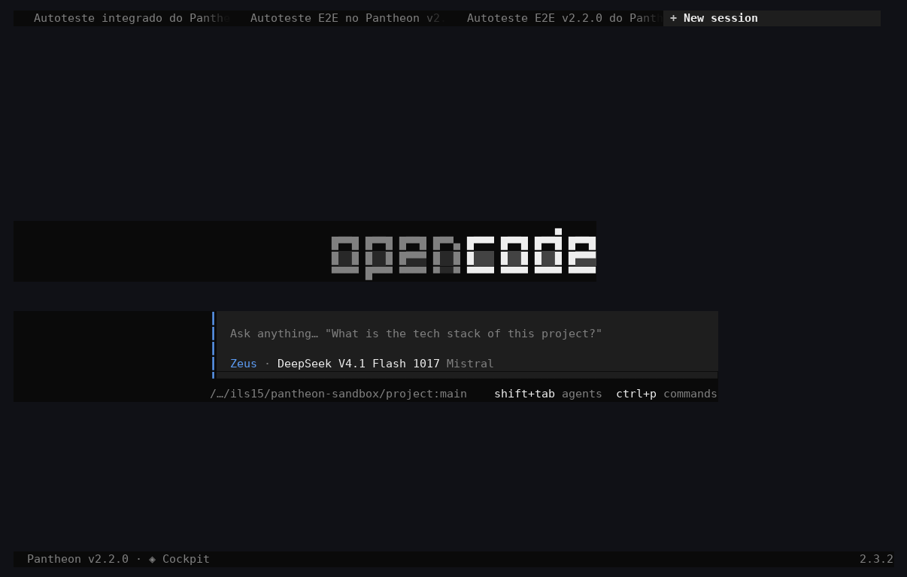
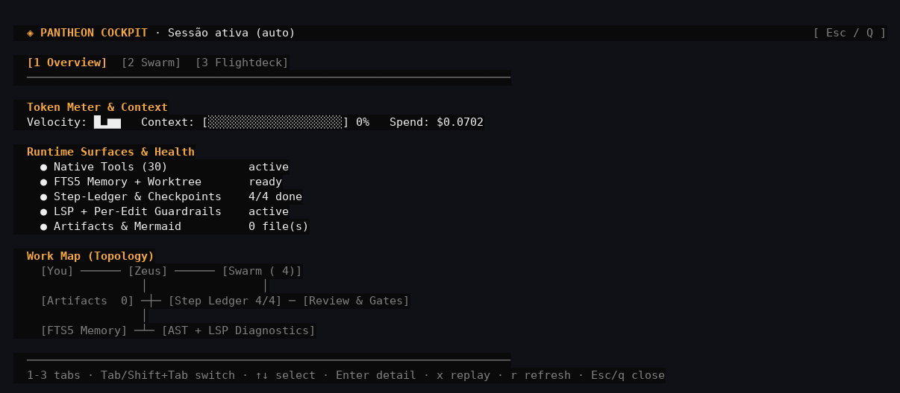
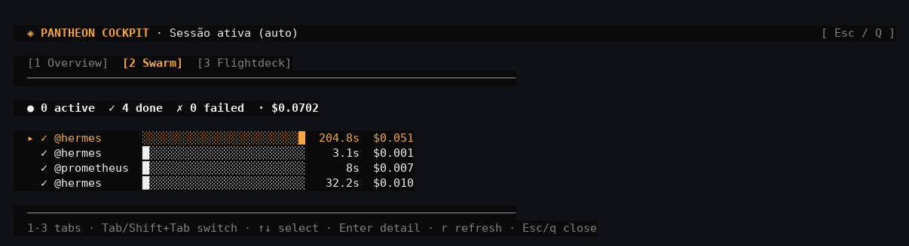
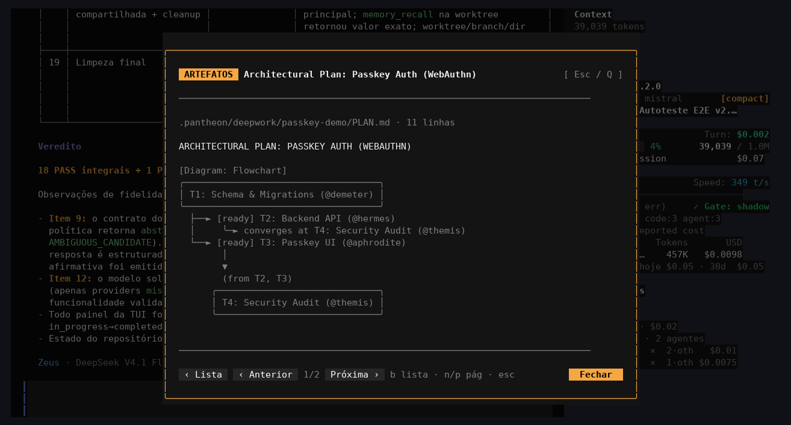
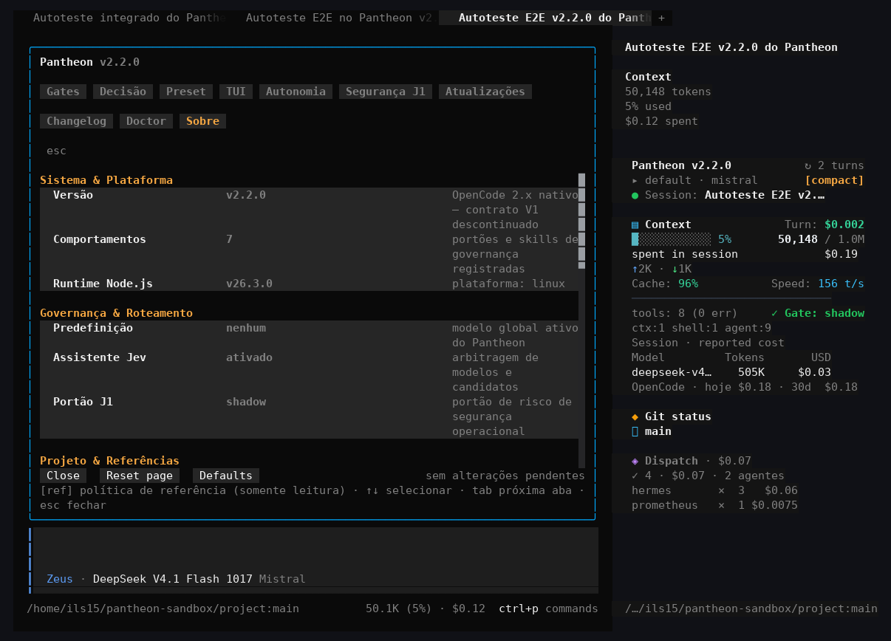

Pantheon v2.2.0 — Native OpenCode 2.x Orchestration, All 5 Architectural Pillars & Mission Control Cockpit¶
[!NOTE] Pantheon
v2.2.0marks the full 2.2 General Availability (GA) milestone for OpenCode 2.x (2.0.x–2.3.x+). Alongside completing the native in-process plugin runtime,v2.2.0pulls forward all five architectural pillars (Structural Editing & LSP Diagnostics,Step-Ledger & Atomic Sub-Sessions,Spec-First Worktree & Verdict Orchestration,Graph Localization & Bugfix RED Gates, andPolyglot Extensibility) together with the 3-page TUI Mission Control Cockpit (/pantheon-cockpit).
# Quick install or upgrade inside OpenCode 2.x
opencode plugin add pantheon-opencode@2.2.0
# or update an existing installation
opencode plugin update pantheon-opencode
1. Architecture Overview¶
In v2.2.0, Pantheon runs natively inside OpenCode 2.x with zero Python runtime required for core orchestration tools and zero project-folder pollution (AGENTS.md or scripts copied into git only if you opt into init):
- 30 Native In-Process TypeScript Tools (
node:sqliteFTS5 memory, checkpoints, goals, structural AST search/rewrite, codemap, Step-Ledger, isolated sub-sessions, git checkpoints, worktrees, typed review verdicts, stack detection, and agent forge) - 14 Canonical Polyglot Agents orchestrated via
ctx.agent.transform - 9 Server Commands (
/pantheon,/pantheon-deepwork,/pantheon-audit,/pantheon-consolidate,/pantheon-focus,/pantheon-forge,/pantheon-model,/pantheon-optimize,/pantheon-vision) - 5 Interactive
@opentui/solidTUI Surfaces (/pantheon-cockpit,/pantheon-artifacts,/pantheon-settings,/pantheon-updates,/pantheon-whats-new)
flowchart LR
User["Engineer / OpenCode 2.x TUI"] --> Server["Server Plugin (./plugin · Node)"]
User --> TUI["TUI Plugin (./tui · @opentui/solid)"]
Server --> SQL["node:sqlite FTS5 + Read-Only Repo Federation"]
Server --> AST["ast_search / ast_rewrite + LSP Bridge (tsc / Pyright / stdio / TCP Pool)"]
Server --> Ledger["pantheon_step_ledger + GIT_INDEX_FILE Checkpoints + Bugfix RED Gate"]
Server --> Orch["pantheon_worktree + execute_step (ctx.session.create) + pantheon_review_verdict"]
Server -- ".pantheon/telemetry/cockpit-events.ndjson" --> TUI
TUI --> Cockpit["/pantheon-cockpit (Overview · Swarm · Flightdeck + Replay Export)"]
TUI --> Artifacts["/pantheon-artifacts (Unicode Mermaid + Quick Links)"]
TUI --> Settings["/pantheon-settings (10 Tabs · Native Tools 30 · Legacy Cleanup)"]
2. What's New & Improved Across the Release¶
2.1 Zero-Init Native Runtime, Bundle Split & Cache Hygiene¶
- Clean Server (
./plugin) vs. TUI (./tui) Bundle Split: The Node server bundle operates independently without loading@opentui/solid, keeping headless runs lightweight while verifyingsrc/plugins/tui/dist/tui.jsfreshness viaprepack,version:check, andpackage:validate. - Zero-Polluting Zero-Init:
opencode plugin add pantheon-opencodeprovisions all 14 agents, 9 server commands,AGENTS.global.md, and KV-cache-friendly session instructions purely in memory. - Duplicate Command & Legacy Cache Cleanup: Eliminated the server-side duplicate
/pantheon-settingsdeclaration, removed the obsoleteQuotas & Spendplaceholder tab, and addedLegacy & Driftaudit/cleanup (legacy-audit.ts) to clean stale coexisting~/.cache/opencode/npm/pantheon-opencode*caches automatically.
2.2 In-Process FTS5 Persistence, Shared Worktree Memory & Multi-Repo Federation¶
- SQLite WAL + FTS5 Core:
memory_store,memory_recall,memory_search,memory_forget,memory_list,memory_stats,context_save,context_get,goal_create,goal_get,goal_update, andgoal_doneexecute directly in-process with TTL support and automatic secret redaction. - Worktree-Shared
.pantheon/Store: Linked git worktrees automatically share the main repository's.pantheon/store (PANTHEON_ISOLATE_WORKTREE_MEMORY=1opts out per worktree). - Read-Only Multi-Repo Federation: Configure
PANTHEON_FEDERATED_REPOSor~/.pantheon/federation.jsonsomemory_search(federated=true)queries peer.pantheon/memory/memory.dbfiles strictly in{ readOnly: true }mode, tagging hits withsourceRepoand surfacing cross-repo counts inmemory_stats. - Self-Pruning Structural Codemap:
code_index,code_query, andcode_neighborsautomatically prune deleted files from the symbol graph on query/reindex.
2.3 Structural Editing (ast_search / ast_rewrite), LSP Bridge & Workspace Confinement¶
- Dependency-Free Structural AST Tools: Custom tokenizer ignores strings and comments while matching
$VARsingle-node and$$$ARGSvariadic captures, supportingdryRun, strict workspace symlink confinement, and pre-write edit guardrails (ast_rewriteis blocked in read-only sessions). - Workspace-Confined
hashline_edit: Resolves relative paths against the active project root and blocks traversal or symlink escapes outside the repository. - Live Post-Edit LSP & Diff-Scoped Lint Bridge:
lsp-diagnostics.tssupports stdio LSP servers (PANTHEON_LSP_SERVER), pooled reusable TCP LSP connections (PANTHEON_LSP_TCP_ENDPOINTSwith sharedinitialize+didOpen→didChange),tsc --noEmit, andpyright --outputjson.- Fixed
execute-after.tsandplugin.tssoast_rewrite(args.path/filesModified) and relativehashline_editpaths resolve cleanly against workspacecwd, surfacing[LSP-Diagnostics]and diff-scoped lint in the same turn.
2.4 Step-Ledger, Atomic GIT_INDEX_FILE Checkpoints, Sub-Sessions & Bugfix RED Gate¶
- Zero-Touch Git Checkpoints: Every
init_stepcaptures abaselineTreehash using an isolated temporaryGIT_INDEX_FILEwithout modifying your real.git/indexstage. - Automatic Rollback on Escalation: When verification retries exhaust (
maxRetries = 2),ThemisReflexControlleremitsthemis:reflex:escalatedandpantheon_step_ledgerautomatically restoresbaselineTree(rollback_stepis also callable on demand). - Isolated Sub-Session Runner (
execute_step): Integrated directly intopantheon_step_ledgerusing verified@opencode/clientSDK calls (create,prompt,wait,remove) so subtasks run cleanly without bloating parent context. - Mechanical Bugfix
REDReproduction Gate: Enforced insidetool.execute.beforefortaskType="bugfix"steps — blocks edits to production code (edit,write,hashline_edit,ast_rewrite,patch) for@hermes/@talosuntilrecord_reproductionrecords a failing test (exitCode !== 0), while still permitting edits to test files so the failing test can be written first.
2.5 Native Worktrees, Typed Review Verdicts & /pantheon-forge¶
- Native Worktree Orchestration (
pantheon_worktree+ctx.worktree.transform): Both the host transform hook and the tool confine isolated worktrees to<project-parent>/.pantheon-worktrees/<repo>/<task>. - Typed Review Verdicts (
pantheon_review_verdict): Records structuredAPPROVE,APPROVE_WITH_NOTES, andBLOCKverdicts. OnBLOCK, automatically resolvesparentIDviasessionDomain.getand dispatches up to 2 remediation turns using validSessionSyntheticInput. /pantheon-forgeWizard & Stack Detector: Inspectspackage.json,pyproject.toml,requirements.txt,Cargo.toml, andgo.modduring both/pantheon-forge/detect_stackandinit --projectto tailor project specialist agents viapantheon_agent_forge.- Modernized 14-Agent Roster: All canonical agents updated with permissions (
todowrite/todoreadpreserved) and instructions for thev2.2.0toolset.
3. TUI Experience: Mission Control Cockpit, Unicode Mermaid & Live Telemetry¶
Mission Control Cockpit (/pantheon-cockpit / /cockpit)¶
Press 1–3 or Tab to switch views, Enter to inspect subagent details, or x on Flightdeck to export a chronological Markdown replay trace (with a Mermaid sequenceDiagram) directly into .pantheon/reports/:
- Overview (
1) — Token velocity sparkline, context meter, session spend, health counters (Native Tools (30) active), and ASCII topology map. - Swarm (
2) — Active/done/failed subagent counts, per-agent cost summary, and concurrent Gantt timeline. - Flightdeck (
3) — VisualGATEmatrix (allowed/receipts/active/blocked), Step-Ledger list, real-time cross-process telemetry bus from.pantheon/telemetry/cockpit-events.ndjson, andxExport Replay Trace.



Interactive Artifact Reader, Sidebar Counters & Settings¶
- Artifact Viewer (
/pantheon-artifacts//artifacts): Renders Mermaidflowchart,graph,sequenceDiagram, andstateDiagramblocks as crisp Unicode terminal boxes, accessible via clickable Home/Sidebar badges (▸ Plan:,◈ Artefatos (N),◈ Cockpit). - Live Sidebar Telemetry & Update Alerts: Displays domain counters (
mem/ctx/code), active child verbs,?/!attention badges, and non-intrusive↑ vX.Y.Zupdate notifications. - Settings (
/pantheon-settings): ShowsNative Tools (30)in About, fixesTabswitching when opened from Home, expands What's New cards, and automates stale npm cache cleanup.


4. Practical Workflow Benefits¶
| Area | Before (2.1.x / early 2.2-beta) |
Now (v2.2.0 GA) |
Concrete Impact |
|---|---|---|---|
| Setup & Cleanliness | Copied files into project repos and relied on Python MCP setup | Zero-Init via opencode plugin add pantheon-opencode |
Zero git noise and instant startup in any repo or worktree |
| Refactor Safety | Text search + manual edits could match comments or leave workspace bounds | ast_search/ast_rewrite + confined hashline_edit + inline LSP/lint |
Fewer silent regressions: type & lint errors fixed in the same turn |
| Bugfix Discipline | Agents could patch production code before proving the bug failed | Mechanical RED gate blocks prod code edits until record_reproduction fails |
Structural TDD enforcement without slowing down test authoring |
| Rollback Guarantees | Multi-step failures left dirty working trees to untangle by hand | Per-step GIT_INDEX_FILE tree snapshots + auto-rollback on escalation |
Deterministic recovery without touching your staged git index |
| Context Efficiency | Subagents ran inline and knowledge stayed siloed per repo | execute_step isolated sub-sessions + read-only memory_search(federated) |
Lower token burn and instant recall across peer repositories |
| Terminal Visibility | No live concurrency Gantt, gate matrix, or diagram preview in TUI | /pantheon-cockpit (1–3) + x replay export + /pantheon-artifacts Mermaid |
Real-time auditability & observability without leaving the terminal |
5. Upgrading & Documentation¶
- Quickstart & Installation: Installation Guide · Quickstart · OpenCode 2.x Integration
- Cockpit, Settings & Artifacts: Settings Guide · Artifacts Guide · Architecture
- Release Highlights Archive: v2.x Highlights